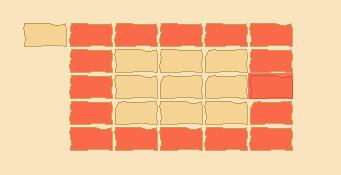
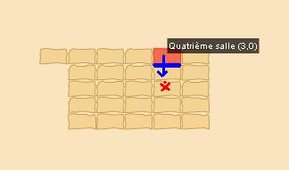

Menu barbok'you

Donjon Minotoror
Donjon faisable par équipe de 5 à 8 joueurs de level 90 à 120
Durée : environ 60 à 90 minutes
Prendre pierre de capture level 150
La clé pour rentrer se fabrique uniquement, vous pourrez dropper les ingredients sur les monstres présent sur l'ile |
|---|
Donjon destiné au level 100, vous pouvez aussi y accéder via le transporteur brigandin. |
|---|
Il faut avoir la clé pour rentrer mais vous ne la perdez pas |
|---|
 |
|---|
Alors j'espere que vous ecoutez bien car ce n'est pas simple à expliquer, vous arrivez dans une salle avec plein de dalle qui permettent d'acceder au salle en rouge (faire geoposition pour voir les salles). Par exemple la dalle en haut à gauche vous fait arriver dans la salle en haut à gauche |
Pour pouvoir affronter le minotoror (et eventuellement le minotot dans la foulée) il faut d'abord recuperer des reliques du deminoboule et du momitoror, ils reapparraisent aléatoirement dans les salles autour d la salle centrale uniquement (en rouge sur l'image) |
|---|
Chaque salle posséde des leviers qui actionne les portes avec une salle d'ecart (je clic sur le levier à droite, ca n'ouve pas ma porte droite mais la porte droite de la salle à droite.... forcement c'est pas plus clair mais voilà...). En gros, il faut qu'une personne avec pu d'energie se "sucide" sur un groupe, elle va ainsi se ressuciter dans le cimetiere du laby |
|---|
 |
|---|
Le reste de l'equipe va salle 4 par exemple, celui dans le cimetiere active le levier du haut ce qui va ouvrir pour ceux en salle 4 et vont pouvoir descendre d'une salle. S'il y a le demi ou la momi, celui dans le cimetiere parle au PNJ pour revenir salle des dalles, va en salle 4 et descend rejoindre son equipe. Le plus simple reste de tuer le groupe présent dans la salle pour faire reapparaitre le demi ou momi, sinon une fois la team en salle 9, il faut une personne qui aille salle 10 depuis la salle des dalles, elle actionne le levier à gauche, permettant à ceux salle 9 d'aller salle 8. Et ainsi de suite jusqu'a tomber sur le demi et la momi Pour info on n'obtient pas les reliques sur une capture, mais uniqumement dans le donjon |
Une fois que toute l'equipe à les 2 reliques ils faut atteindre la salle centrale Pour cela : 1. Sucider quelqu'un pour qu'il aille salle cimetiere 2. Toute l'equipe salle 15 3. en salle 15 activer le levier à gauche 4. Celui salle cimitiere passe à gauche salle centrale 5. Une fois salle centrale il active le levier à droite 6. L'equipe salle 15 passe salle cimetiere 7. En salle cimetiere elle actionne levier à gauche 8. Celui salle centrale passe à gauche en salle 12. 9. Une fois salle 12 il actionne levie à droite et se sucide 10. Toute la team passe de la salle cimetiere à la salle centrale |
|---|
Parlez au PNJ pour entrer |
|---|
Le minotoror tape 2-3 fois à 150-200 mais jusqu'a 800 en CC, il invoque des tofus, le momitoror fait perdre des PM et attire, le deminoboule tap essentiellement dans les 150. Tuez d'abord les gaminos qui donnent des resistance à l'equipe. Et bonne chance pour dropper un dofus pourpre. |
|---|
Dofus est un MMORPG édité par Ankama." Barbok " est un site non-officiel sans aucun lien avec Ankama.
Toutes les illustrations sont la propriété d'Ankama Studio et de Dofus. Le contenu de ce site a été rédigé initialement par Immortal, il ne s'agit que d'une remise en ligne effectuée par Eternal Games.